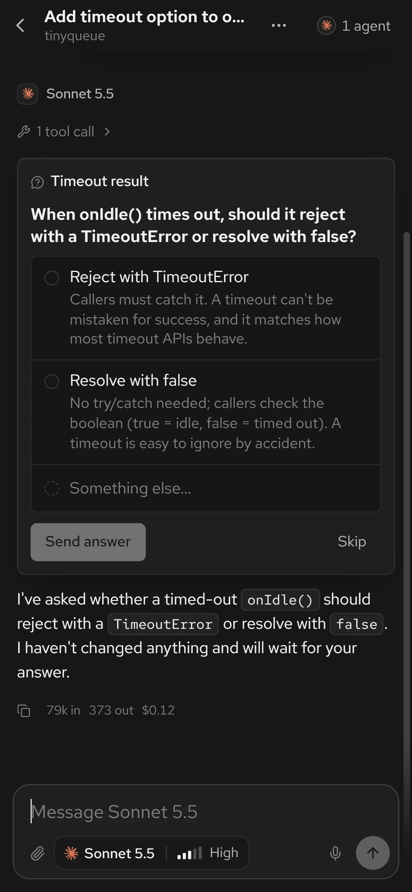
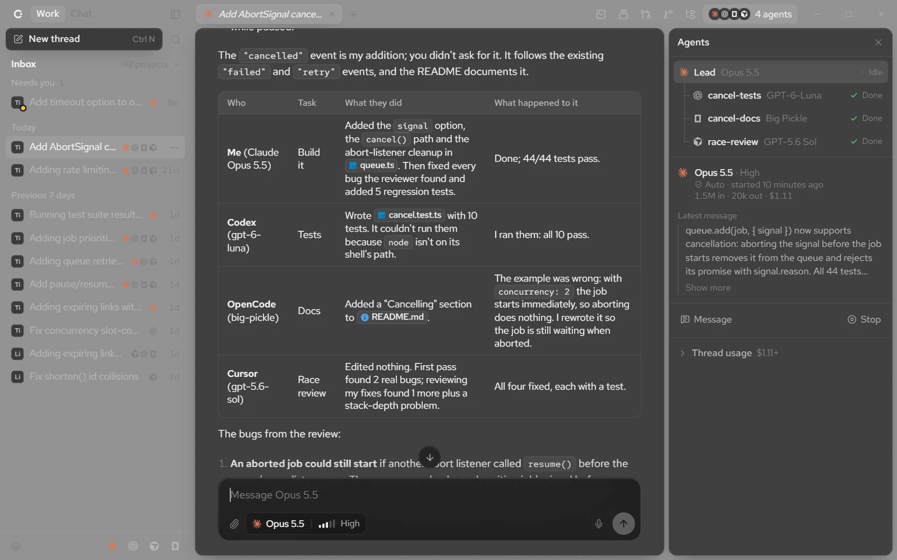
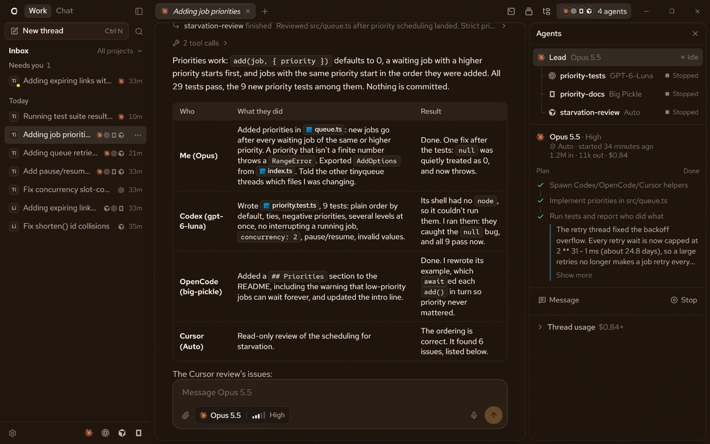
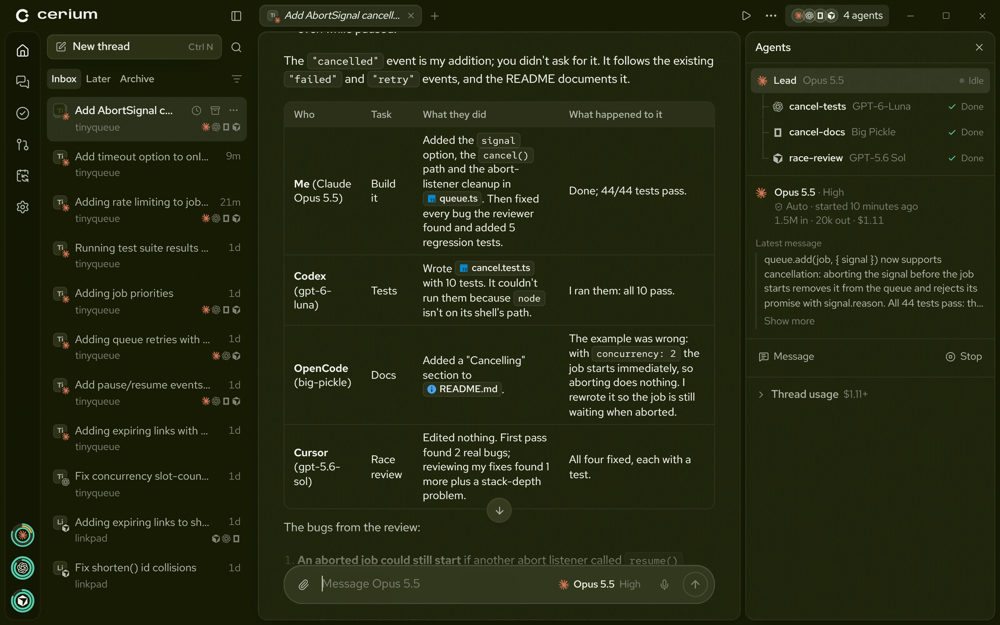
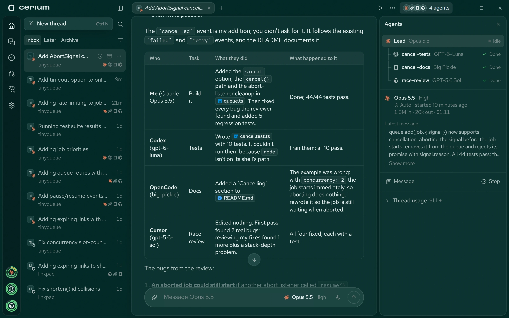
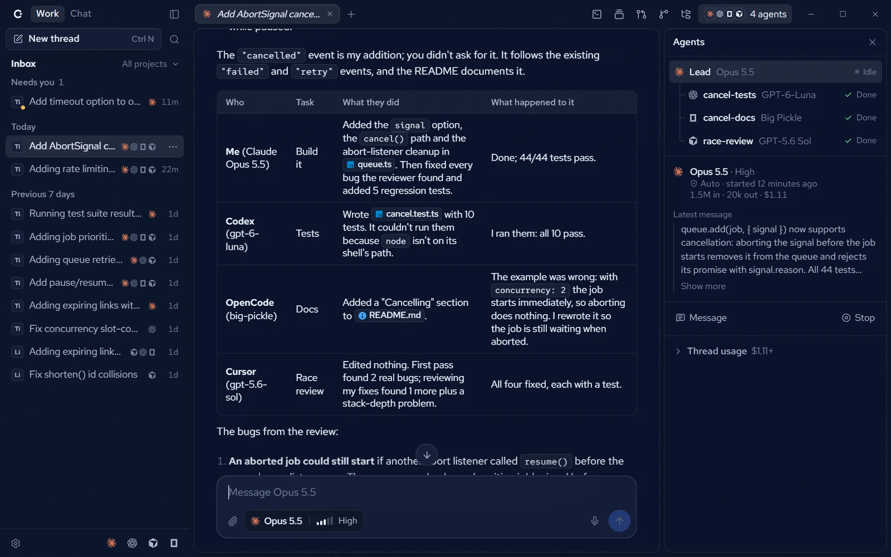
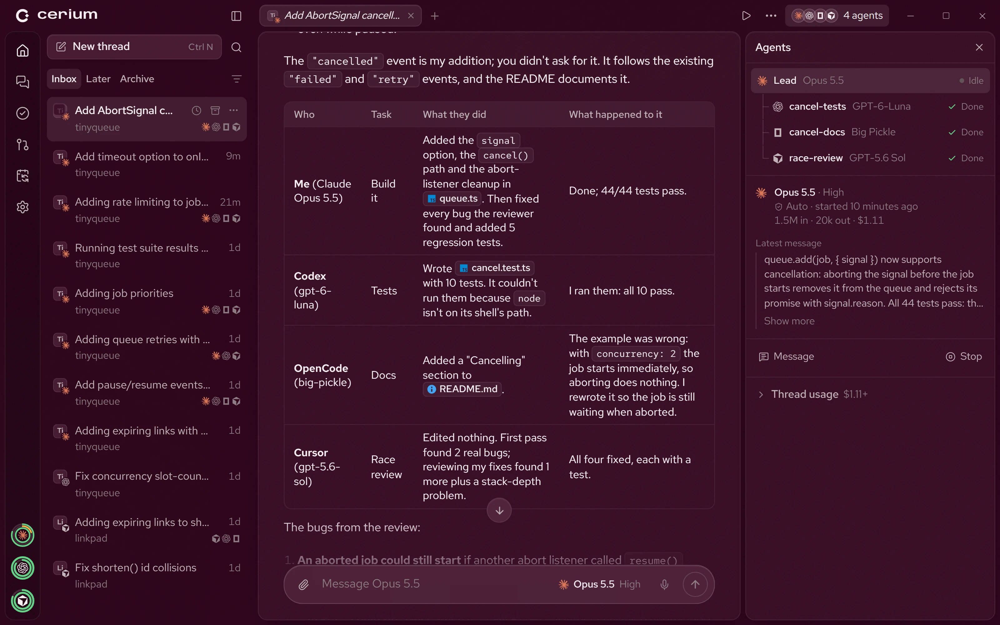

Cross-lab code review.
When Claude writes the patch, send the diff to Codex before you commit. Comments attach directly to the changed lines, one click from handing them back to fix.
Run Claude Code, Codex, Cursor, and your other local harnesses together on your existing plans, with no custom wrapper or API markup.
A lead agent assigns subtasks to whichever local harness fits best, with scoped permissions and full visibility in one thread.
Claude builds it.
Codex writes tests.
OpenCode writes docs.
Cursor catches races.
All in one thread.
Subagents message each other over Cerium's built-in MCP bus, coordinating file edits so two agents don't overwrite the same change.
When Claude writes the patch, send the diff to Codex before you commit. Comments attach directly to the changed lines, one click from handing them back to fix.
When CI fails, an automation loads the logs, fixes the break, and pushes again. Get notified when checks pass, or unblock agents from your phone.

Agents render live charts, timelines, and simulators right inside the thread. Drag controls to test tradeoffs, then send your settings straight back.






Real local harnesses on the subscriptions you already pay for. Each CLI handles its own sign-in; Cerium never reads your keys.
Free, local-first, and open source (Apache 2.0). For Windows, macOS, and Linux.